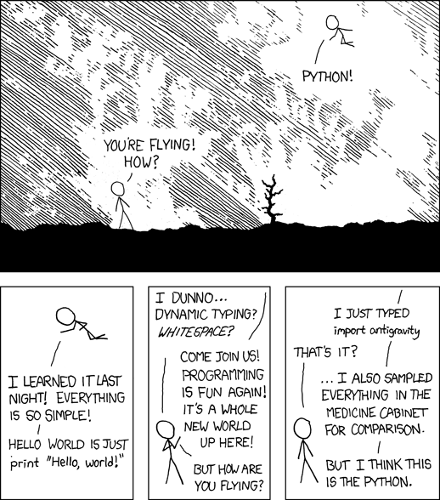

Mu - How to Make a Kids' Code Editor
Nicholas H.Tollervey (@ntoll)
http://ntoll.org
Have you ever tried to teach 10 year olds to program?
Tools are for developers, not for learners
Minimalism FTW

I must have all the features!
Why not use IDLE?
NEVER suggest this to Carrie Anne
A Sunday afternoon hack for micro:bit

(Based on Carrie Anne's feature list.)
People like Mu!
"Please can you make it into a generic Python editor?"


What if we taught music like we teach programming?

Mu aims to be the real thing
(for beginner programmers).
What if we taught programming like we teach music?

Ask teachers what would help

Observe students writing Python

Draw upon developer experience

Experiment, test, fix (repeat)

The Essence of Mu:
- Less is more (remove all unnecessary distractions);
- Keep it simple (so Mu is easy to understand);
- Walk the path of least resistance (Mu should be easy);
- Have fun (learning should be a positive experience).
Live Demo
Education makes our future possible.
What that future is depends upon who
turns up to provide such education.
Don't just sit there, do something!
Celebrating someone who turns up... ;-)